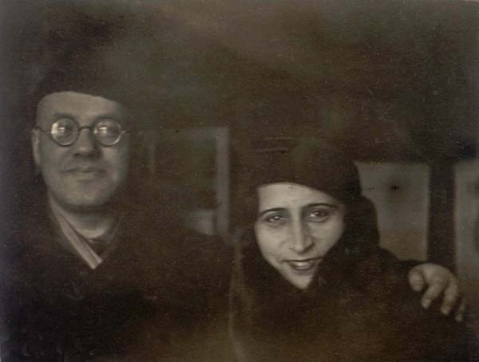
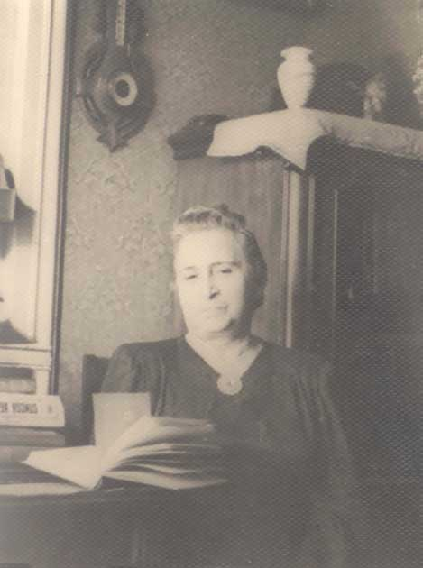

Родилась в 1888 году в Витебске.
Муж - Блехман Марк Осипович, от которого в 1918 году родила сына Самуила.
Три года работала преподавательницей французского языка в школе.
Умерла в январе 1968 года в Москве.


Блехман (Вымениц) Дина Соломоновна.
|
 |
Родилась в 1888 году в Витебске. Муж - Блехман Марк Осипович, от которого в 1918 году родила сына Самуила. Три года работала преподавательницей французского языка в школе. Умерла в январе 1968 года в Москве. | |
|
| ||
|
 |